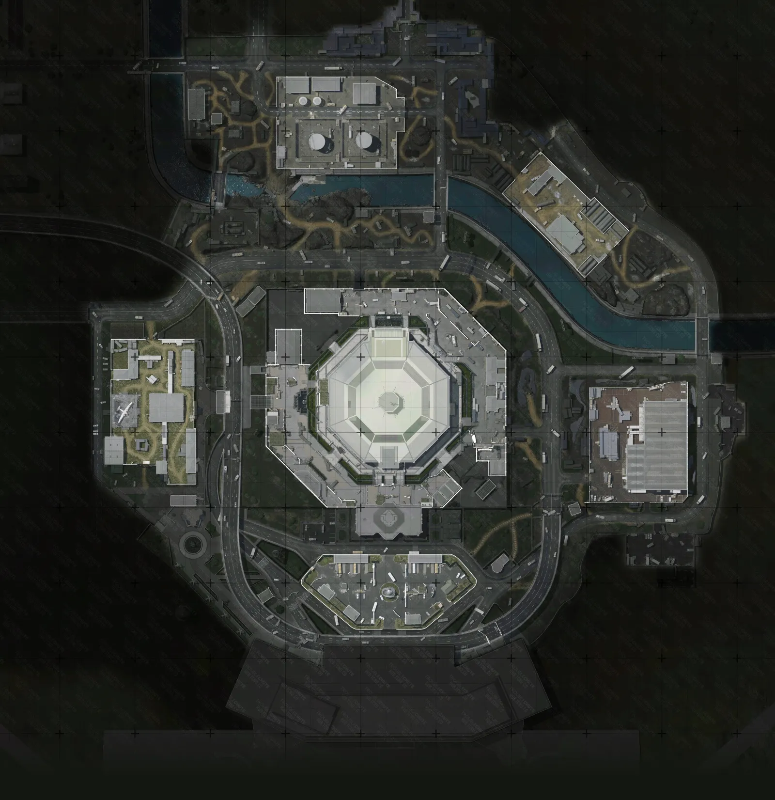

Где торговец в Аэропорту
Места, где в Аэропорту появляется полевой торговец.

Торговец может появиться в любом из этих мест.
Торговец в Аэропорту
В Аэропорту торговец появляется в двух местах. Он есть в жёлтой и красной версии карты.
Набор предметов в грузах зависит от карты и режима, поэтому шанс на красное у торговца на разных картах разный.
Что внутри груза, ABI Merchant показывает до покупки. Как это работает: как найти красное у торговца.
Режимы с торговцем
- Жёлтая
- Красная